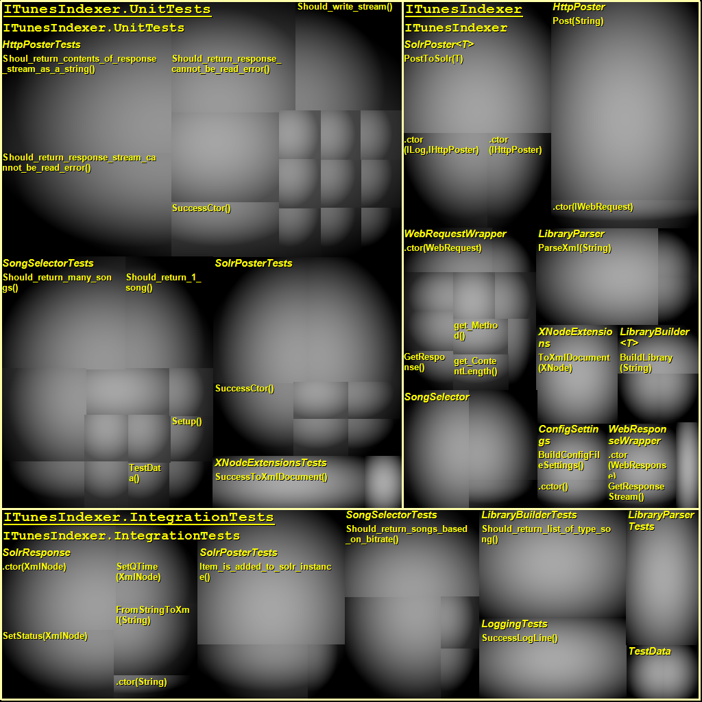
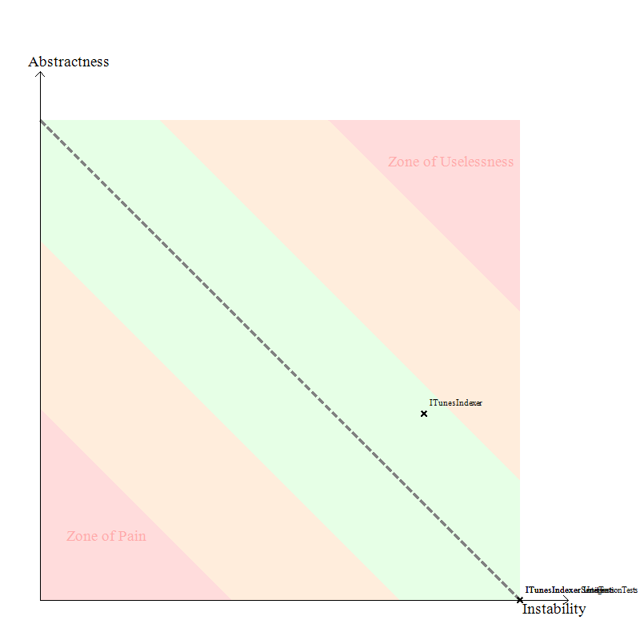
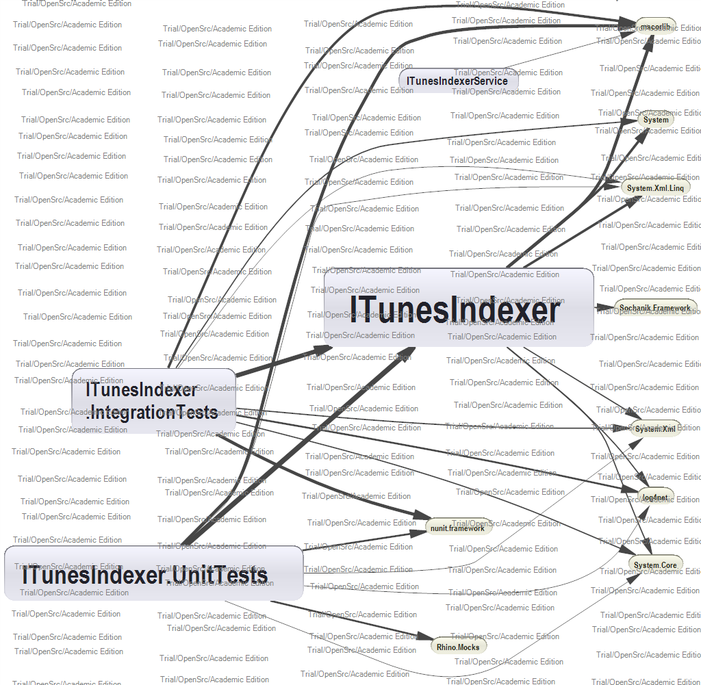

NDepend Report
Application name: ITunesIndexer
This report has been built on: 11/23/2010 22:32:11
in 00:06
by NDepend v3.2.0.5096 (Trial /Open Src / Academic Edition)
Application Metrics
Assemblies Metrics
Visual NDepend View
Assemblies Abstractness vs. Instability
Assemblies Dependencies
Assemblies Dependencies Diagram
Assemblies build order
NDepend information and warnings
CQL Queries and Constraints
Types Metrics
Application Metrics
Number of IL instructions: 1896
Number of lines of code: 246
Number of lines of comment: 73
Percentage comment: 22
Number of assemblies: 4
Number of classes: 25
Number of types: 32
Number of abstract classes: 0
Number of interfaces: 7
Number of value types: 0
Number of exception classes: 0
Number of attribute classes: 0
Number of delegate classes: 0
Number of enumerations classes: 0
Number of generic type definitions: 4
Number of generic method definitions: 0
Percentage of public types: 90.62%
Percentage of public methods: 78.81%
Percentage of classes with at least one public field: 0%
| Stat | # Occurrences | Avg | StdDev | Max |
|
Properties on Interfaces
| 7 Interfaces
| 0 | 0 | 0 properties on ITunesIndexer.IWebResponse |
|
Methods on Interfaces
| 7 Interfaces
| 1.57 | 0.73 | 3 methods on ITunesIndexer.IWebRequest |
|
Arguments on Methods on Interfaces
| 11 Methods
| 0.73 | 0.45 | 1 arguments on ITunesIndexer.IHttpPoster.Post(String) |
|
Public Properties on Classes
| 25 Classes
| 0.88 | 2.98 | 15 public properties on ITunesIndexer.Models.Song |
|
Public Methods on Classes
| 25 Classes
| 4.32 | 5.88 | 31 public methods on ITunesIndexer.Models.Song |
|
Arguments on Public Methods on Classes
| 108 Methods
| 0.39 | 0.51 | 2 arguments on ITunesIndexer.SolrPoster<T>..ctor(ILog,IHttpPoster) |
|
IL Instructions in non-abstract Methods
| 140 Methods
| 13.54 | 17.55 | 100 IL instructions in ITunesIndexer.HttpPoster.Post(String) |
|
|
|
Cyclomatic complexity on non abstract Methods
| 140 Methods
| 1.31 | 0.87 |
CC = 7 for ITunesIndexer.HttpPoster.Post(String) |
Assemblies Metrics
Visual NDepend View

Assemblies Abstractness vs. Instability

Assemblies Dependencies
Assemblies Dependencies Diagram
Blue : Assemblies of your application.
Yellow : Tiers assemblies referenced by assemblies of your application.

Assemblies build order
ITunesIndexer
ITunesIndexerService
ITunesIndexer.UnitTests
ITunesIndexer.IntegrationTests
NDepend information and warnings
11/23/2010 22:32:05 Begin full analysis with NDepend v3.2.0
Assemblies loaded from {C:\Windows\Microsoft.NET\Framework\v4.0.30319}
mscorlib.dll v4.0.0.0
System.dll v4.0.0.0
System.Xml.Linq.dll v4.0.0.0
System.Xml.dll v4.0.0.0
System.Core.dll v4.0.0.0
Assemblies loaded from {F:\Users\Greg\Documents\WORK\ITunesIndexer\src\ITunesIndexer\bin\Debug}
ITunesIndexer.dll v1.0.0.0
Sochanik.Framework.dll v1.0.0.34282
Assemblies loaded from {F:\Users\Greg\Documents\WORK\ITunesIndexer\src\ITunesIndexerService\bin\Debug}
ITunesIndexerService.exe v1.0.0.0
Assemblies loaded from {F:\Users\Greg\Documents\WORK\ITunesIndexer\src\ITunesIndexer.UnitTests\bin\Debug}
ITunesIndexer.UnitTests.dll v1.0.0.0
nunit.framework.dll v2.5.8.10295
Rhino.Mocks.dll v3.5.0.1337
Assemblies loaded from {F:\Users\Greg\Documents\WORK\ITunesIndexer\src\ITunesIndexer.IntegrationTests\bin\Debug}
ITunesIndexer.IntegrationTests.dll v1.0.0.0
log4net.dll v1.2.10.0
33 source files parsed ; all source files found ; all source files in-sync with PDB
0 CQL constraint has been extracted from code.
No dependency cycle detected in assemblies referencement graph.
11/23/2010 22:32:08 Analyse dependencies of your application.
11/23/2010 22:32:09 Building the report (standard).
WARNING: No application or third party assembly found in directory {C:\Windows\Microsoft.NET\Framework\v4.0.30319\WPF}
CQL Queries and Constraints
In Trial /Open Src / Academic Edition, only one CQL rule violation is displayed in the report as a sample.
In the Professional Edition you can define your own CQL rules with VisualNDepend and choose the ones that are displayed in the report in case of violation.
{Code Quality} Some CQL constraints are not satisfied.
{Code Quality \ Type Metrics} Some CQL constraints are not satisfied.
{Code Quality from Now!} All CQL queries compile and all CQL contraints are satisfied.
{Design} Some CQL constraints are not satisfied.
{Design \ Performance} Some CQL constraints are not satisfied.
{Unused Code / Dead Code} All CQL queries compile and all CQL contraints are satisfied.
{Encapsulation} Some CQL constraints are not satisfied.
{Encapsulation \ Methods Optimal Encapsulation} Some CQL constraints are not satisfied.
{Encapsulation \ Types Optimal Encapsulation} Some CQL constraints are not satisfied.
{Encapsulation \ Fields Optimal Encapsulation} All CQL queries compile and all CQL contraints are satisfied.
{Diff / Changes / Evolution} All CQL queries compile and all CQL contraints are satisfied.
{Diff / Changes / Evolution \ API Breaking Changes} All CQL queries compile and all CQL contraints are satisfied.
{Test Coverage} Some CQL constraints are not satisfied.
{Purity / Immutability / Side-Effects} All CQL queries compile and all CQL contraints are satisfied.
{Naming Conventions} Some CQL constraints are not satisfied.
{Naming Conventions \ Name too long} Some CQL constraints are not satisfied.
WARNING: The following CQL constraint is not satisfied. 1 methods on 267 tested match the condition. --> Group {Code Quality}
// <Name>Quick summary of methods to refactor</Name>
WARN IF Count > 0 IN SELECT
TOP 10 METHODS /*OUT OF "YourGeneratedCode" */ WHERE
// Metrics' definitions
( NbLinesOfCode > 30 OR // http://www.ndepend.com/Metrics.aspx#NbLinesOfCode
NbILInstructions > 200 OR // http://www.ndepend.com/Metrics.aspx#NbILInstructions
CyclomaticComplexity > 20 OR // http://www.ndepend.com/Metrics.aspx#CC
ILCyclomaticComplexity > 50 OR // http://www.ndepend.com/Metrics.aspx#ILCC
ILNestingDepth > 4 OR // http://www.ndepend.com/Metrics.aspx#ILNestingDepth
NbParameters > 5 OR // http://www.ndepend.com/Metrics.aspx#NbParameters
NbVariables > 8 OR // http://www.ndepend.com/Metrics.aspx#NbVariables
NbOverloads > 6 ) // http://www.ndepend.com/Metrics.aspx#NbOverloads
AND
// Here are some ways to avoid taking account of generated methods.
!( NameIs "InitializeComponent()" OR
// NDepend.CQL.GeneratedAttribute is defined in
// the redistributable assembly $NDependInstallDir$\Lib\NDepend.CQL.dll
// You can define your own attribute to mark "Generated".
HasAttribute "OPTIONAL:NDepend.CQL.GeneratedAttribute")
| methods | # lines of code (LOC) | # IL instructions | Cyclomatic Complexity (CC) | IL Cyclomatic Complexity (ILCC) | IL Nesting Depth | # Parameters | # Variables | # Overloads | Full Name |
| Post(String) | 15 | 100 | 4 | 7 | 5 | 1 | 8 | 1 | ITunesIndexer.HttpPoster.Post(String) |
| Sum: | 15 | 100 | 4 | 7 | 5 | 1 | 8 | 1 | |
| Average: | 15 | 100 | 4 | 7 | 5 | 1 | 8 | 1 | |
| Minimum: | 15 | 100 | 4 | 7 | 5 | 1 | 8 | 1 | |
| Maximum: | 15 | 100 | 4 | 7 | 5 | 1 | 8 | 1 | |
| Standard deviation: | 0 | 0 | 0 | 0 | 0 | 0 | 0 | 0 | |
| Variance: | 0 | 0 | 0 | 0 | 0 | 0 | 0 | 0 | |
Types Metrics
rank: TypeRank (based on Google PageRank algo)
lcom/lcom HS: Lack of Cohesion Of Methods of a class (HS means Henderson-Sellers formula)
CC: Cyclomatic Complexity computed on source code
ILCC: Cyclomatic Complexity computed on IL code
Ca: Afferent Coupling
Ce: Efferent Coupling
ABC: Association Between Classes
NOC: Number Of Children
DIT: Depth in Inheritance Tree
A pink cell means that its value belongs to the 15% highest values for its metric
| Type | rank | # ILInst | # lines of code | # lines of comment | % comment | lcom | lcom(HS) | CC | ILCC | Ca | Ce | ABC | # Instance Methods | # Static Methods | # Prop | # Fld | NOC | DIT | Namespace |
| Song | 2.5 | 153 | 0 | 0 | - | 0 | 0 | 0 | 31 | 8 | 7 | 1 | 31 | 0 | 15 | 15 | 0 | 1 | ITunesIndexer.Models |
| IWebResponse | 2.41 | - | - | 0 | - | - | - | - | - | 5 | 1 | 0 | 1 | 0 | 0 | 0 | - | - | ITunesIndexer |
| IWebRequest | 1.32 | - | - | 0 | - | - | - | - | - | 5 | 4 | 0 | 3 | 0 | 0 | 0 | - | - | ITunesIndexer |
| ConfigSettings | 1.16 | 38 | 3 | 0 | 0 | 0 | 0 | 3 | 8 | 5 | 6 | 1 | 3 | 5 | 2 | 2 | 0 | 2 | ITunesIndexer |
| ILibraryBuilder<T> | 0.92 | - | - | 0 | - | - | - | - | - | 4 | 3 | 0 | 2 | 0 | 0 | 0 | - | - | ITunesIndexer |
| IHttpPoster | 0.8 | - | - | 0 | - | - | - | - | - | 4 | 1 | 0 | 1 | 0 | 0 | 0 | - | - | ITunesIndexer |
| XNodeExtensions | 0.63 | 27 | 4 | 0 | 0 | 0 | 0 | 1 | 3 | 2 | 8 | 4 | 0 | 1 | 0 | 0 | 0 | 1 | ITunesIndexer |
| LibraryParser | 0.59 | 82 | 8 | 2 | 20 | 0 | 0 | 3 | 6 | 2 | 17 | 16 | 2 | 2 | 0 | 2 | 0 | 1 | ITunesIndexer |
| LibraryBuilder<T> | 0.53 | 37 | 4 | 0 | 0 | 0 | 0 | 3 | 5 | 2 | 16 | 7 | 3 | 1 | 0 | 1 | 0 | 1 | ITunesIndexer |
| WebResponseWrapper | 0.46 | 17 | 3 | 0 | 0 | 0 | 0 | 2 | 2 | 1 | 5 | 2 | 2 | 0 | 0 | 1 | 0 | 1 | ITunesIndexer |
| SongSelector | 0.44 | 47 | 8 | 0 | 0 | 0.5 | 0.75 | 4 | 5 | 2 | 12 | 6 | 3 | 0 | 0 | 2 | 0 | 1 | ITunesIndexer |
| ISelector | 0.42 | - | - | 0 | - | - | - | - | - | 1 | 4 | 0 | 2 | 0 | 0 | 0 | - | - | ITunesIndexer |
| SolrPoster<T> | 0.4 | 81 | 17 | 1 | 5.56 | 0 | 0 | 5 | 5 | 2 | 16 | 10 | 3 | 0 | 0 | 2 | 0 | 1 | ITunesIndexer |
| HttpPoster | 0.37 | 109 | 17 | 0 | 0 | 0 | 0 | 5 | 8 | 2 | 16 | 12 | 2 | 0 | 0 | 1 | 0 | 1 | ITunesIndexer |
| ISolrPoster<T> | 0.35 | - | - | 0 | - | - | - | - | - | 1 | 1 | 0 | 1 | 0 | 0 | 0 | - | - | ITunesIndexer |
| LibraryParser+<>c__DisplayClass5 | 0.35 | 17 | 1 | - | - | 0 | 0 | - | 2 | 1 | 10 | 5 | 2 | 0 | 0 | 1 | 0 | 1 | ITunesIndexer |
| ILibraryParser | 0.35 | - | - | 0 | - | - | - | - | - | 1 | 3 | 0 | 1 | 0 | 0 | 0 | - | - | ITunesIndexer |
| TestData | 0.28 | 120 | 2 | 0 | 0 | 0 | 0 | 2 | 2 | 1 | 6 | 7 | 0 | 2 | 0 | 0 | 0 | 1 | ITunesIndexer.IntegrationTests |
| SolrResponse | 0.28 | 111 | 19 | 0 | 0 | 0 | 0 | 8 | 15 | 1 | 8 | 6 | 8 | 1 | 2 | 2 | 0 | 1 | ITunesIndexer.IntegrationTests |
| WebRequestWrapper | 0.28 | 77 | 11 | 0 | 0 | 0.1 | 0.11 | 10 | 10 | 1 | 10 | 10 | 10 | 0 | 3 | 1 | 0 | 1 | ITunesIndexer |
| HttpPosterTests+<>c__DisplayClass1 | 0.25 | 12 | 1 | - | - | 0 | 0 | - | 2 | 1 | 7 | 2 | 2 | 0 | 0 | 1 | 0 | 1 | ITunesIndexer.UnitTests |
| LibraryParserTests | 0.15 | 20 | 5 | 0 | 0 | 0 | 0 | 1 | 2 | 0 | 13 | 7 | 2 | 0 | 0 | 0 | 0 | 1 | ITunesIndexer.IntegrationTests |
| SolrPosterTests | 0.15 | 72 | 14 | 0 | 0 | 0.5 | 0.67 | 3 | 4 | 0 | 24 | 20 | 4 | 0 | 0 | 2 | 0 | 1 | ITunesIndexer.IntegrationTests |
| LibraryBuilderTests | 0.15 | 32 | 8 | 0 | 0 | 0 | 0 | 1 | 2 | 0 | 14 | 10 | 2 | 0 | 0 | 0 | 0 | 1 | ITunesIndexer.IntegrationTests |
| LoggingTests | 0.15 | 30 | 6 | 0 | 0 | 0 | 0 | 1 | 2 | 0 | 19 | 11 | 2 | 0 | 0 | 0 | 0 | 1 | ITunesIndexer.IntegrationTests |
| SongSelectorTests | 0.15 | 78 | 13 | 0 | 0 | 0 | 0 | 4 | 7 | 0 | 18 | 16 | 3 | 2 | 0 | 2 | 0 | 1 | ITunesIndexer.IntegrationTests |
| HttpPosterTests | 0.15 | 328 | 52 | 2 | 3.7 | 0 | 0 | 15 | 27 | 0 | 31 | 26 | 7 | 9 | 0 | 9 | 0 | 1 | ITunesIndexer.UnitTests |
| SolrPosterTests | 0.15 | 127 | 19 | 0 | 0 | 0 | 0 | 7 | 12 | 0 | 24 | 21 | 4 | 4 | 0 | 4 | 0 | 1 | ITunesIndexer.UnitTests |
| Program | 0.15 | 5 | 0 | 0 | - | 0 | 0 | 1 | 2 | 0 | 4 | 1 | 1 | 1 | 0 | 0 | 0 | 1 | ITunesIndexerService |
| LoggingTests | 0.15 | 3 | 0 | 0 | - | 0 | 0 | 0 | 1 | 0 | 2 | 1 | 1 | 0 | 0 | 0 | 0 | 1 | ITunesIndexer.UnitTests |
| XNodeExtensionsTests | 0.15 | 20 | 4 | 0 | 0 | 0 | 0 | 1 | 2 | 0 | 11 | 7 | 2 | 0 | 0 | 0 | 0 | 1 | ITunesIndexer.UnitTests |
| SongSelectorTests | 0.15 | 253 | 27 | 0 | 0 | 0.25 | 0.29 | 12 | 18 | 0 | 24 | 27 | 8 | 5 | 0 | 6 | 0 | 1 | ITunesIndexer.UnitTests |